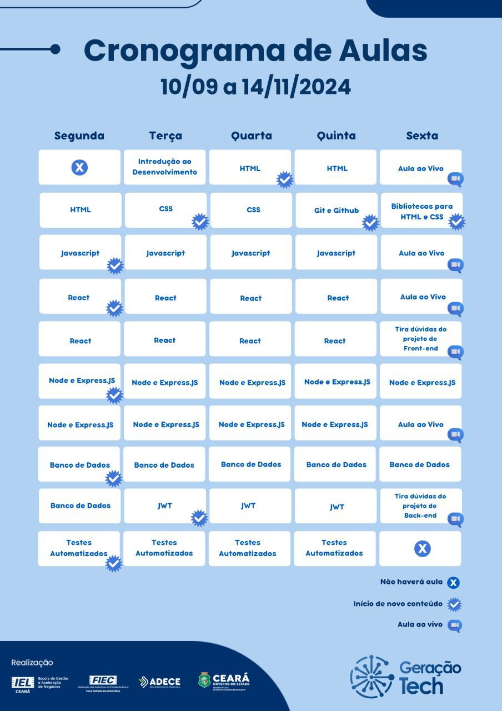

Redes Socias Mais Usadas
Lista das Redes Sociais
Exemplos de conteúdos
Geração Tech
Cronograma:

Rede social é uma estrutura social composta por pessoas ou organizações, conectadas por um ou vários tipos de relações, que compartilham valores e objetivos comuns.
Uma das fundamentais características na definição das redes é a sua abertura, possibilitando relacionamentos horizontais e não hierárquicos entre os participantes.
"Redes não são, portanto, apenas uma outra forma de estrutura, mas quase uma não estrutura, no sentido de que parte de sua força está na habilidade de se fazer e desfazer rapidamente".
[1] Atualmente, o termo é comumente associado, porém não limitado, às Redes Sociais Virtuais.Muito embora um dos princípios da rede seja sua abertura e porosidade, por ser uma ligação social, a conexão fundamental entre as pessoas se dá através da identidade.
As redes sociais online podem operar em diferentes níveis, como, por exemplo, redes de relacionamentos (Facebook, Twitter, Instagram, Google+, Youtube, MySpace, Badoo), redes profissionais (Linkedin), redes comunitárias (redes sociais em bairros ou cidades), redes políticas, redes militares, dentre outras, e permitem analisar a forma como as organizações desenvolvem a sua atividade, como os indivíduos alcançam os seus objetivos ou medir o capital social – o valor que os indivíduos obtêm da rede social. As redes sociais têm adquirido importância crescente na sociedade moderna. São caracterizadas primariamente pela autogeração de seu desenho, pela sua horizontalidade e sua descentralização. Um ponto em comum dentre os diversos tipos de rede social é o compartilhamento de informações, conhecimentos, interesses e esforços em busca de objetivos comuns. A intensificação da formação das redes sociais, nesse sentido, reflete um processo de fortalecimento da Sociedade Civil, em um contexto de maior participação democrática e mobilização social. Com as diversas redes sociais, os consumidores estão em contato constante com as marcas. Este fato resulta da revolução tecnológica que, com tablets e smartphones, coloca o mundo nas mãos do consumidor, e tem, como consequência, uma revolução ao nível do marketing e da forma como as empresas se comunicam com os consumidores. Devido a este fenômeno, as marcas, nas mais diversas áreas de negócio, estão a perceber-se de que as técnicas de marketing tradicionais estão a tornar-se cada vez menos eficazes e mais dispendiosas,[3] isto porque a segmentação no marketing "tradicional" é muito menos eficaz e a medição do impacto não é imediata, o que acontece com o marketing digital e, principalmente, com o marketing das redes sociais. As marcas já não conseguem controlar nem a sua comunicação nem o que se diz sobre elas nas redes sociais. O consumidor assumiu o controle e é participativo em todo o processo de comunicação, chegando mesmo ao ponto de as marcas terem que apresentar conteúdos relevantes, pertinentes e adequados aos desejos e necessidades dos consumidores de forma a terem "permissão" para falar com eles. Este fenômeno está diretamente ligado a um conceito emergente no marketing e comunicação: earned media ("mídia conquistada"). Marketing nas redes sociais As redes sociais criaram uma nova forma de exploração das dinâmicas de relacionamento entre as empresas e os seus clientes, o marketing nas redes sociais é mais pessoal e interativo do que qualquer outro meio, no entanto é também necessário ter em atenção de que estas novas ferramentas que surgem todos os dias são cada vez mais complexas e de difícil entendimento para o utilizador mais comum. Uma gestão profissional de marketing nas redes sociais exige o estudo e conhecimento de outras áreas como por exemplo as comunidades virtuais e as conexões. O marketing e a comunicação atravessam, portanto, hoje, um caminho que se pauta pela existência de diversificados canais de comunicação, com duas vias, através dos quais as marcas dialogam com os seus consumidores e vice-versa. As redes sociais online apresentam-se atualmente como uma plataforma de interação com clientes e potenciais clientes, promovendo a fidelização. Permitem ainda que esta mesma interação seja em tempo real uma vez que estando estas Redes ligadas 24 horas/dia, 365 dias/ano as empresas e os seus utilizadores estão conectados quase que automaticamente, sabendo sempre a opinião de cada um. Por exemplo, a empresa lança um produto novo mas quer saber se o mesmo irá ter ou não sucesso no mercado, poderá efetuar um questionário aos seus seguidores e após tratamento das respostas sabe se será aceite ou não consoante está ou terá que ser alterado. Isto tudo em tempo real ou numa questão de dias, enquanto que através de outros sistemas antigos isto era tudo muito mais complicado e demorado. As redes sociais permitem mesmo à empresa uma espécie de estudo de mercado com um custo baixíssimo. Cada vez mais, as redes sociais são utilizadas também para vendas,[4] com plataformas como o Marketplace do Facebook[5] ou a loja do Instagram. Em 2023, 59,5% das pequenas e médias empresas online utilizaram o Instagram como o principal meio de criação de conteúdo digital para divulgação de sua loja virtual; seguido por WhatsApp (39%), Facebook (38%) e TikTok (22%). É o que aponta o estudo NuvemCommerce 2024, realizado pela Nuvemshop – plataforma para criação de lojas online.[6] Formas de redes sociais As redes sociais costumam reunir uma motivação comum, porém podem se manifestar de diferentes formas. As principais são: Redes comunitárias: estabelecidas em bairros ou cidades, em geral tendo a finalidade de reunir os interesses comuns dos habitantes, melhorar a situação do local ou prover outros benefícios. Redes profissionais: prática conhecida como networking, tal como o LinkedIn, que procura fortalecer a rede de contatos de um indivíduo, visando futuros ganhos pessoais ou profissionais. Redes sociais online tais como Facebook, WhatsApp, VK, Google+, MySpace, Twitter, Badoo WorldPlatform (normalmente estamos acostumados a redes sociais públicas, mas existem privadas. Normalmente, existem estágios de tempo em cada rede social até que se torne pública) que é um serviço online, plataforma ou site que foca em construir e refletir redes sociais ou relações sociais entre pessoas, que, por exemplo, compartilham interesses e/ou atividades, bate-papo, jogar com os amigos, entre outras funções. Como já dito acima, existem redes sociais públicas, em que o registro está desbloqueado para todos. As privadas podem pedir o endereço eletrônico e só depois de uma resposta é que o registro fica disponível, nesse tipo de rede nem sempre são aceitos todos os tipos de pessoas. Existem ainda as redes sociais pessoais, para família ou amigos, pouco conhecidas na Internet.
Lista das Redes Sociais